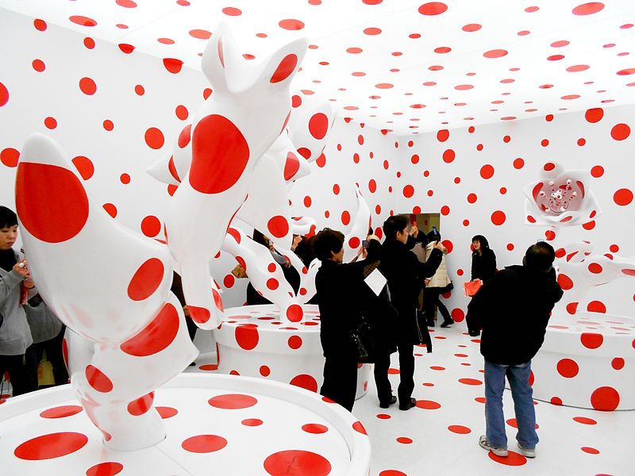

|  |
Yayoi KusamaPainter, sculptor, filmmaker, and performer Yayoi Kusama is a famously provocative avant-garde artist, best known for her works featuring repeating motifs and psychedelic imagery that evoke themes of psychology, feminism, obsession, sex, creation, destruction, and intense self-reflection. |
Georgia O'KeeffeGeorgia O'Keeffe is a 20th century American painter and pioneer of American modernism best known for her canvases depicting flowers, skyscrapers, animal skulls and southeastern landscapes. |
|
Jean-Michel BasquiatA poet, musician, and graffiti prodigy in late-1970s New York, Jean-Michel Basquiat had honed his signature painting style of obsessive scribbling, elusive symbols and diagrams, and mask-and-skull imagery by the time he was 20. “I don’t think about art while I work,” he once said. “I think about life.” |